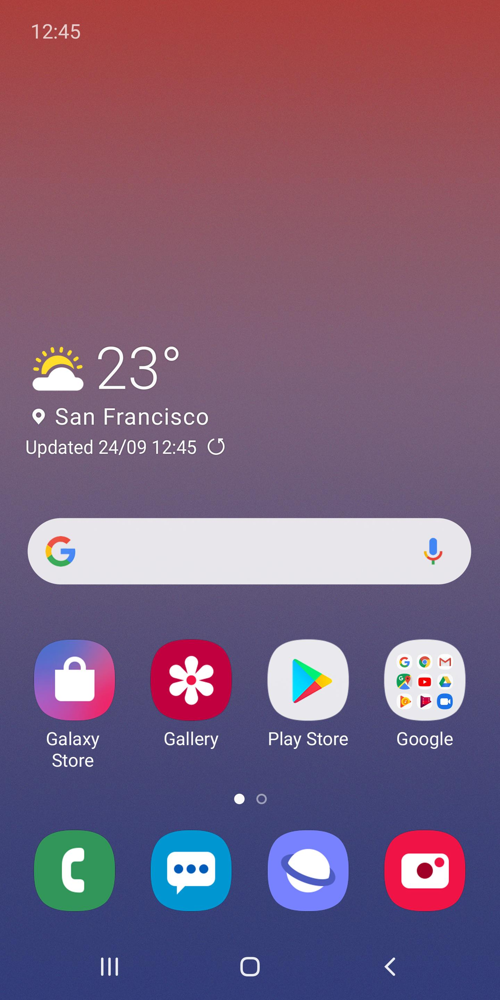

 Android — операционная система для смартфонов, планшетов, электронных книг, цифровых проигрывателей, наручных часов, фитнес-браслетов, игровых приставок, ноутбуков, нетбуков, смартбуков, очков Google Glass, телевизоров, проекторов и других устройств (в 2015 году появилась поддержка автомобильных развлекательных систем и бытовых роботов). Основана на ядре Linux и собственной реализации виртуальной машины Java от Google. Изначально разрабатывалась компанией Android, Inc., которую затем купила Google. Впоследствии Google инициировала создание альянса Open Handset Alliance , который сейчас занимается поддержкой и дальнейшим развитием платформы. Android позволяет создавать Java-приложения, управляющие устройством через разработанные Google библиотеки. Android Native Development Kit позволяет портировать библиотеки и компоненты приложений, написанные на Си и других языках. В 86 % смартфонов, проданных во всём мире во втором квартале 2014 года, была установлена операционная система Android. На конференции разработчиков в мае 2017 года Google объявила, что за всю историю Android было активировано более 2 млрд Android-устройств.
22 октября 2008 года альянс OHA опубликовал исходный код платформы Android на открытом исходном коде Android: и операционная система, и промежуточное ПО (middleware), и основные конечные приложения, написанные на Java. Общий объём исходного кода Android составил 2,1 ГБ. «Предпочтительной лицензией» на исходный код Android является лицензия Apache 2.0
ОС Android позволяет полностью использовать API, используемый в приложениях ядра. Архитектура построена таким образом, что любое приложение может использовать уже реализованные возможности другого приложения при условии, что последнее откроет доступ на использование своей функциональности. Таким образом, архитектура реализует принцип многократного использования компонентов ОС и приложений.
В состав ОС Android входит набор библиотек ядра, которые предоставляют большую часть функциональности библиотек ядра языка Java. Платформа использует оптимизированную, регистр-ориентированную виртуальную машину Dalvik, в отличии от которой стандартная виртуальная машина Java– стек-ориентированная. Каждое приложение запускается в своем собственном процессе, со своим собственным экземпляром виртуальной машины. Виртуальная машина Dalvik использует формат DalvikExecutable(*.dex), оптимизированный для минимального использования памяти приложением. Это обеспечивается такими базовыми функциями ядра Linux, как организация поточной обработки и низкоуровневое управление памятью. Байт-кодJava, на котором написаны ваши приложения, компилируются в dex-формат при помощи утилиты dx, входящей в состав SDK.
ОС Android основана на ОС Linux версии 2.6, тем самым платформе доступны системные службы ядра, такие как управление памятью и процессами, обеспечение безопасности, работа с сетью и драйверами. Также ядро служит слоем абстракции между аппаратным и программным обеспечением